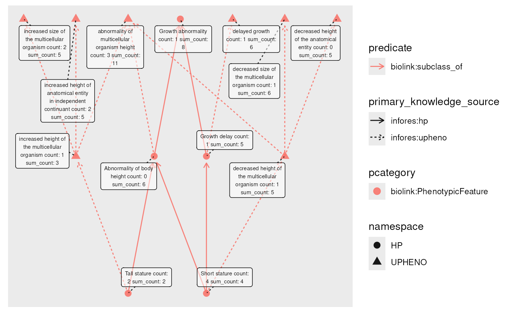

mutate()R/rollup.R
rolling.RdThis function computes, for each node, an aggregated set of data from all
descendant (for roll-ups) or ancestor (for roll-downs) nodes defined by
specified edge predicates. Designed for use with mutate()
on node data, for each node N, the specified fun is called
on the node table column filtered to nodes that can reach (be reached by) N over
predicates edges. If include_self is true, N itself is included.
roll_up(
column = NULL,
fun = c,
include_self = TRUE,
predicates = "biolink:subclass_of",
...
)
roll_down(
column = NULL,
fun = c,
include_self = TRUE,
predicates = "biolink:subclass_of",
...
)The node column to draw rollup or rolldown information from.
The aggregation function to use when rolling up or down. Default is c
Whether to include each nodes' value in column in the rollup/rolldown for that node.
A vector of relationship predicates (nodes in g are subjects in the KG), indicating which edges to consider in the rollup/rolldown. Should be transitive; default biolink:subclass_of
Other parameters (unused)
Vector or list, with one entry per node.
Note that path counts and order are not considered; rollups (rolldowns) collect information from all descendant (ancestor) nodes as a set.
The return value will be either a list, or if the result would be a list with all length-1 or length-0 elements, a vector with 0-length elements replaced by NA. Practically, this results in a list when necessary and a vector otherwise.
roll_down(), descendants(), [ancestors(), transfer(), transitive_closure()]
engine <- file_engine(system.file("extdata", "eds_marfan_kg.tar.gz", package = "monarchr"))
engine |> fetch_nodes(name == "Tall stature" | name == "Short stature") |>
expand_n(predicates = "biolink:subclass_of", direction = "out", n = 2) |> # get 2 levels of ancestors
activate(nodes) |>
mutate(count = rpois(graph_order(), 1.5)) |> # random count value per node
mutate(sum_count = roll_up(count, fun = sum, include_self = TRUE)) |> # apply sum to descendant (and self) values
plot(node_label = paste(name, " count: ", count, "sum_count: ", sum_count))
#> Initial graph size: 2 nodes || 0 edges
#> Expanding graph: iteration 1/2
#> Graph size: 6 nodes || 5 edges
#> Expanding graph: iteration 2/2
#> Graph size: 13 nodes || 15 edges
#> Using "sugiyama" as default layout
